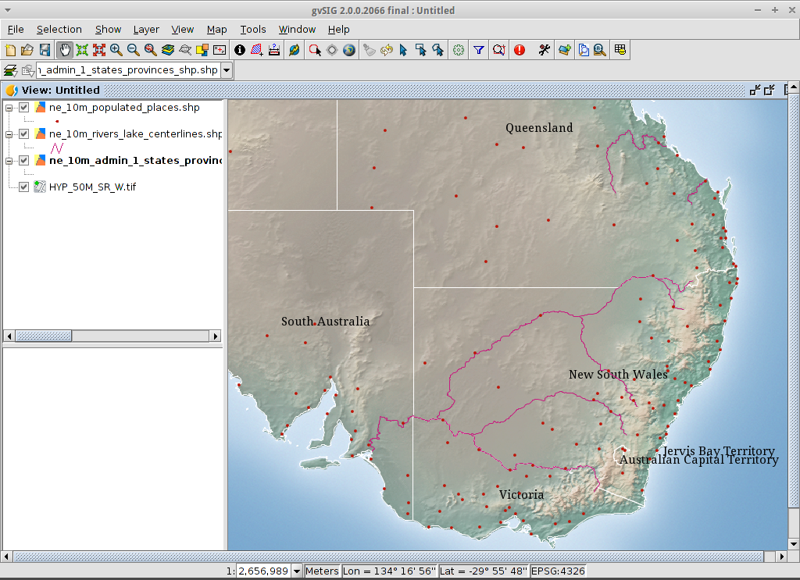

Nota
Questo progetto è incluso solo nel disco della macchina virtuale OSGeoLive
Guida rapida gvSIG Desktop¶
gvSIG è un sistema informativo geografico (GIS), cioè un’applicazione desktop progettata per catturare, memorizzare, gestire, analizzare e distribuire qualsiasi tipo di informazione geografica di riferimento al fine di risolvere complessi problemi di gestione e pianificazione. gvSIG è noto per avere un’interfaccia user-friendly, essendo in grado di accedere ai formati più comuni, sia vettoriali che raster. Dispone di una vasta gamma di strumenti per lavorare con informazioni di tipo geografico (strumenti di query, creazione di layout, geoprocessi, reti, ecc.), il che rende gvSIG lo strumento ideale per gli utenti che lavorano nel regno del territorio.
Contenuti
Nota
Se l’interfaccia utente di gvSIG diventa non reattiva, provare Alt+F per aprire il menu file, per esempio. Allora l’interfaccia utente dovrebbe funzionare di nuovo. Questo bug accade solo nella distro gvSIG per OSGeoLive. Non appare in una normale installazione di gvSIG.
Nota
Nota per la versione gvSIG 2.3.1: Per caricare i file raster l’utente deve avere il permesso di scrittura nella cartella dove si trova il file. Altrimenti l’applicazione chiederà una cartella valida (con permesso di scrittura). Poiché l’utente «user» non ha il permesso di scrittura nella cartella «data», sarà necessario selezionare, quando richiesto, una cartella dove l’utente ha il permesso di scrittura, come per esempio, «/home/user».
Avvia gvSIG e crea una vista¶
Seleziona gvSIG dal menu dell’applicazione, . L’applicazione di solito impiega circa un minuto per avviarsi.
Per impostazione predefinita gvSIG si apre con un file di progetto vuoto con il tipo di documento “View” selezionato. Tuttavia, su OSGeoLive, gvSIG è stato configurato per iniziare con un progetto di default. Clicca sul pulsante New Project o andare su . Quando viene richiesto, è possibile selezionare Discard Changes poiché non userai l’ultimo progetto.
Clicca sul pulsante New per creare una vista. Verrà aperta automaticamente.

Definisci la proiezione della tua vista¶
Seleziona .

Per la Proiezione corrente, clicca sul pulsante …. Questo aprirà la finestra di dialogo Nuovo CRS.
Usando l’elenco a discesa per Type, seleziona EPSG.
Inserisci il codice EPSG per il sistema di riferimento delle coordinate. Per questo esempio stai usando EPSG=4326, che è la proiezione geografica WGS84 2D. Poi clicca sul pulsante Cerca. Questo elencherà il SR selezionato nella tabella sotto il campo di ricerca.
Seleziona OK per tornare alla finestra di dialogo Visualizza proprietà. Il codice EPSG è ora 4326 e le unità della mappa sono cambiate in gradi.
Seleziona OK per tornare al Project Manager.

La finestra di visualizzazione è composta da tre zone.
(2) The top-left cell contains a list of vector or raster layers being used in the view (i.e. Table-of-Contents).
(3) The bottom-left cell displays the extent of the main view over a selected vector file.
(4) The right cell is the main display area where raster and vector data is rendered.

Aggiungi layer alla vista¶
Clicca sull’icona Add layer nella barra degli strumenti principale per aprire la finestra di dialogo Add layer.
Seleziona Add nella finestra di dialogo Add layer. Per default la prima scheda è File quindi apparirà la finestra di dialogo Open file.
Vai alla directory
/usr/local/share/data/natural_earth2/.Seleziona i file come mostrato nell’immagine.

Nota
Per default vengono mostrati tutti i formati, quindi puoi selezionare sia i file vettoriali che quelli raster alla volta tenendo premuto il tasto CTRL.
Clicca sul pulsante OK per ritornare alla finestra di dialogo Aggiungi layer.
Clicca sul pulsante OK della finestra di dialogo Add layer per tornare alla vista.
Configura la visualizzazione della vista¶
Clicca sull’icona Maximize per una migliore visualizzazione dei dati.
La dimensione della colonna Table-of-Contents può essere regolata con il mouse per aiutare a vedere nomi di file lunghi.
Nel caso in cui il layer raster sia in alto, dovrebbe essere spostato manualmente in basso.

Zoom in una regione¶
Per default lo strumento Zoom in è selezionato sulla barra degli strumenti principale.
Usa il puntatore del mouse per disegnare un rettangolo di selezione intorno all’Australia sud-orientale. Fai questo selezionando l’angolo in alto a sinistra del rettangolo di selezione, tenendo premuto il tasto sinistro del mouse e trascinando l’angolo in basso a destra del rettangolo di selezione sull’area selezionata. Rilascia il tasto sinistro del mouse una volta che hai definito l’area approssimativa.

Cambia l’aspetto dei layer¶
Rendi un poligono trasparente¶
Seleziona il layer
ne_10m_admin_1_states_provinces.shpusando il tasto sinistro del mouse e clicca di nuovo con il tasto destro.Seleziona il sottomenu .
Apparirà la finestra di dialogo Layer properties.

Cambia la simbologia di un layer vettoriale¶
Seleziona la scheda Symbols in cima alla finestra di dialogo Layers properties.
Seleziona il pulsante Choose symbol per far apparire la finestra di dialogo Symbol selector.
Rimuovi il simbolo di riempimento e cambia il colore del bordo¶
Deseleziona la casella Fill color in modo che i poligoni siano trasparenti.
Clicca su … vicino a Border color:.
Scegli bianco come colore.
Clicca sul pulsante OK per tornare alla finestra di dialogo Symbol selector.
Clicca sul pulsante OK per tornare alla finestra di dialogo Layers properties.

Cambiare l’etichettatura di un layer vettoriale¶
Seleziona la scheda Labelling in cima alla finestra di dialogo Layers properties.
Cambia gli attributi del testo con quelli mostrati nell’immagine, poi clicca sul pulsante Accept.

Visualizza il risultato¶
Nota che questa è una vista molto semplice che mostra un punto, una linea e un poligono vettoriale sovrapposti a un file raster. È altrettanto facile avere una fotografia aerea o un modello digitale del terreno come sfondo ai tuoi dati vettoriali, o mostrare altri dati vettoriali memorizzati in formati diversi.
{kind=link}
Aggiungi una panoramica o un localizzatore¶
Seleziona .

Clicca sul pulsante Aggiungi layer….
Nella finestra Add layer, clicca sul pulsante Add.
Seleziona il layer
HYP_50M_SR_W.tif.Clicca sul pulsante Open per tornare alla finestra Add layer.
Clicca sul pulsante Ok e chiudi la finestra Configure locator.

Ora puoi sapere facilmente dove si trova la vista nel mondo.

Seleziona le città di una regione¶
Seleziona la regione¶
Seleziona il layer
ne_10m_admin_1_states_provinces.shpusando il tasto sinistro del mouse.Seleziona l’icona Seleziona per punto nella barra degli strumenti principale.
Clicca sul poligono che rappresenta lo Stato del Nuovo Galles del Sud. Il poligono diventerà giallo o di qualche altro colore a seconda delle tue preferenze.

Apri lo strumento Seleziona per layer¶
Seleziona il layer
ne_10m_populated_places.shpusando il tasto sinistro del mouse.Seleziona per aprire la finestra di dialogo Selection by Layer

Seleziona le città contenute in una regione¶
Cambia il primo criterio di selezione usando le caselle a discesa sul lato sinistro della finestra di dialogo Selection by Layer come mostrato nell’immagine.
Cambia il secondo criterio di selezione come mostrato nell’immagine.
Clicca il pulsante New set per selezionare le città all’interno del poligono selezionato.
Seleziona il pulsante Cancel nella finestra di dialogo Selection by Layer per tornare alla vista.

Deseleziona il poligono per vedere cosa è successo¶
Seleziona il layer
ne_10m_admin_1_states_provinces.shpusando il tasto sinistro del mouse.Seleziona l’icona “Cancella selezione” nella barra degli strumenti principale.
Ora puoi vedere che sono selezionate solo le città del Nuovo Galles del Sud.

Esporta gli elementi selezionati in un nuovo shapefile¶
Seleziona il formato del file in uscita¶
Seleziona il layer
ne_10m_populated_places.shpusando il tasto sinistro del mouse.Seleziona per iniziare l’esportazione.
Seleziona Formato Shape.
Clicca su Avanti.

Seleziona il nome del file in uscita¶
Scegli una cartella e digita il nome del file.
Cliccare su Apri e poi su Avanti.

Sistema di riferimento¶
Scegli l’opzione Originale (EPSG:4326) per mantenere il sistema di riferimento della vista.
Clicca su Avanti.
Opzioni di esportazione¶
Scegli l’opzione Selected features per esportare solo le città del Nuovo Galles del Sud.
Clicca su Esporta.

Visualizza il risultato¶
Il nuovo layer è stato aggiunto alla vista.
Per controllare che l’esportazione sia andata bene, imposta il file originale come invisibile. Solo le città del Nuovo Galles del Sud dovrebbero essere mostrate.

Crea una nuova mappa¶
Seleziona il tipo di documento Map nel Project Manager.
Clicca sul pulsante New per creare una mappa.
Viene mostrata una nuova finestra dove è possibile selezionare la vista da inserire sulla Mappa. Seleziona l’unica vista che hai e premi Accept.
La mappa apparirà con la vista selezionata.
Lavora con la mappa¶
Elementi aggiuntivi come una scala e una freccia nord possono essere aggiunti alla mappa usando le icone nella barra degli strumenti principale o con i sottomenu nel menu .
La mappa può essere stampata o esportata in PDF o Postscript per essere incorporata in altri lavori.
Seleziona l’icona Close window per tornare al Project manager

Salva il progetto o esci da gvSIG¶
I progetti possono essere salvati per un uso successivo usando l’opzione di menu , o
I progetti possono essere abbandonati o chiusi usando l’opzione di menu .

Installa un componente aggiuntivo¶
Apri il gestore dei componenti aggiuntivi¶
Seleziona . Dopo un po”, apparirà la finestra Install package.
Nella finestra Install package, seleziona l’opzione Installazione da URL.
Scegli l’URL del repo mostrato nell’immagine.
Clicca sul pulsante Avanti.

Trova un add-on¶
Nel gestore dei componenti aggiuntivi puoi trovare plugin e librerie di simboli.
Digita “Forestry” nella casella di testo Fast filter.
Controlla l’add-on chiamato Symbols: Forestry (è una libreria di simboli).
Clicca su Avanti.

Termina l’installazione¶
Clicca su Inizia a scaricare.
Poi clicca su Avanti.
Infine clicca su Finish.
Anche se il nuovo messaggio indica che è necessario un riavvio, per le librerie di simboli non è necessario. Devi riavviare solo quando installi i plugin.
Aggiungi un layer OpenStreetMap¶
Ora aggiungerai la cartografia di OpenStreetMap. All’interno di una nuova vista, in EPSG 3857, clicca sul pulsante Add layer….
Scegli la scheda OSM.
Seleziona “Mapnik” tra i layer disponibili.
Clicca su Ok.

Visualizza il risultato¶
Un nuovo layer è stato aggiunto alla vista. Semplicemente facendo lo zoom su una regione potrai vedere i dati dettagliati di Open Street Map.


Aggiungi un layer WMTS¶
WMTS è un’evoluzione dello standard WMS OGC basato sulla gestione dei tasselli.
Seleziona un server¶
All’interno di una vista, clicca sul pulsante Add layer….
Scegli la scheda WMTS.
Scegli l’URL mostrato nell’immagine.
Clicca su Connetti.
Clicca su Avanti.

Seleziona uno dei layer disponibili¶
Seleziona uno dei layer disponibili (ad es. bluemarble)
Clicca su Aggiungi.
Clicca su Avanti.

Seleziona il formato dell’immagine e il sistema di riferimento¶
Seleziona image/jpeg come formato immagine.
Seleziona EPSG:4326 (nota che la vista deve avere lo stesso SR, altrimenti annulla, cambialo e avvia di nuovo).
Clicca su Accetta.

Un nuovo layer è stato aggiunto alla vista.